Tampilan hidup Gratis
Warna langit mengikuti waktu subuh, siang, senja, dan malam. Ada efek hujan, awan, dan bintang sesuai cuaca, serta kartu yang melompat setiap pergantian jam.
Flip clock untuk monitor, laptop, HP, tablet, dan TV Android, lengkap dengan jadwal sholat, cuaca, dan Jam Masjid. Warna langitnya ikut berubah sesuai waktu, seperti yang Anda lihat sekarang.
Papan Bandara · salah satu tema beranimasi baru
Jam Masjid, Mode Ramadan, slide info, signage toko, pengumuman suara, 18 tema, screensaver, remote dari HP.
Jam meja, papan jadwal masjid, layar cuaca, jam dunia, sampai timer. Pilih tampilannya, pasang di layar mana pun.
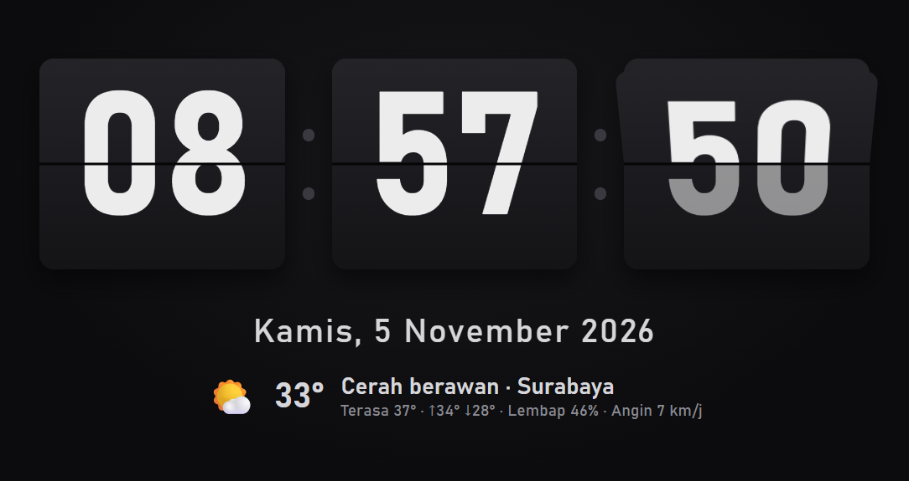
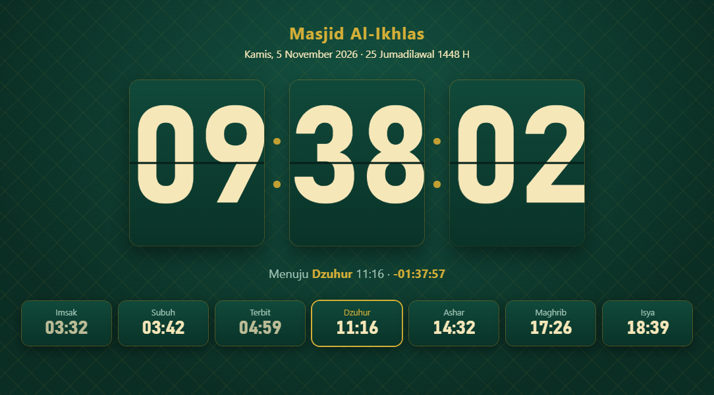
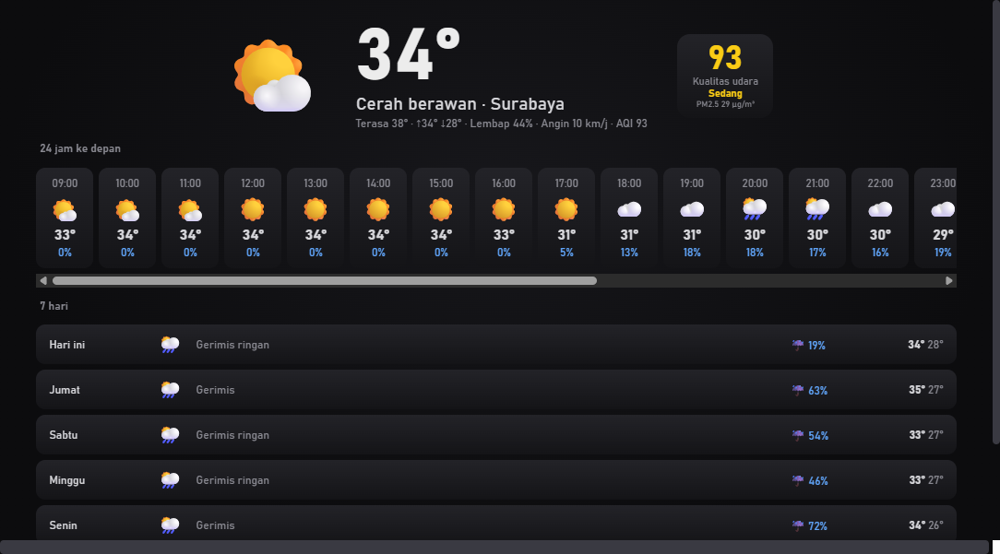
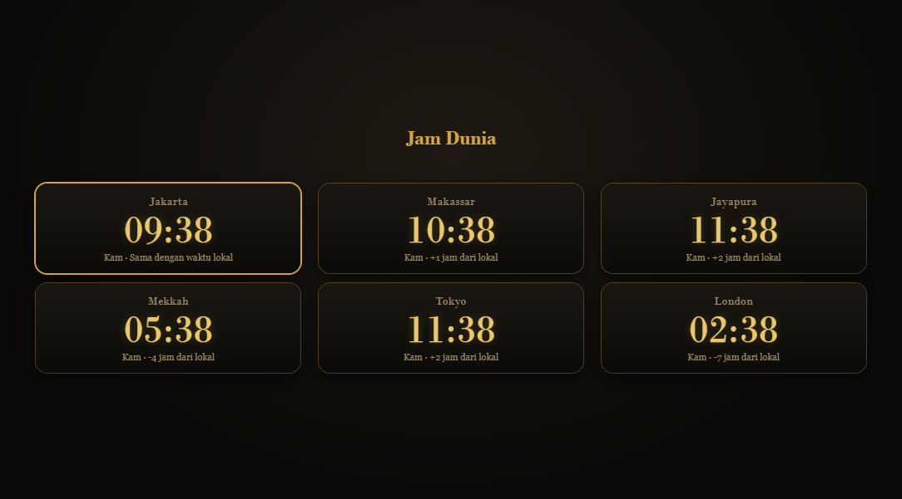
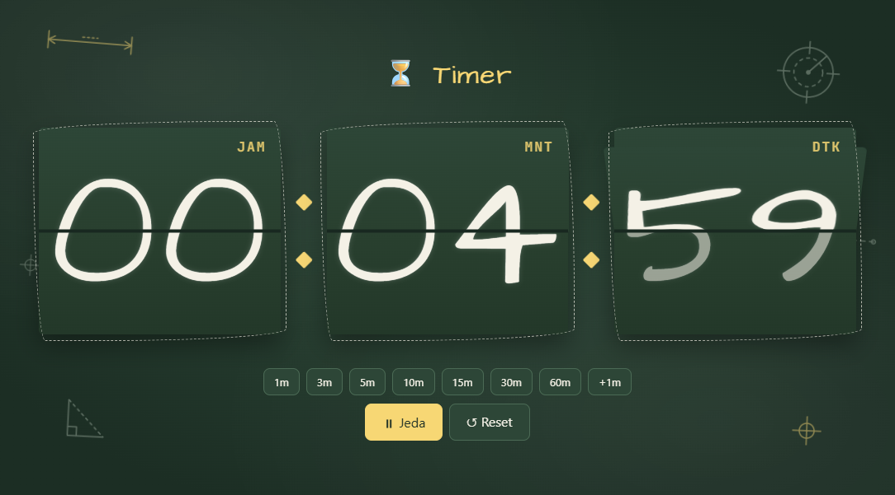
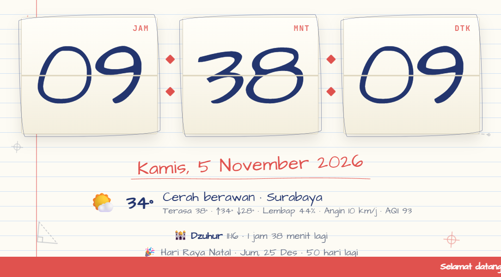
Jam yang bereaksi pada waktu, cuaca, dan momen penting, ditambah alat baru untuk masjid dan toko.
Warna langit mengikuti waktu subuh, siang, senja, dan malam. Ada efek hujan, awan, dan bintang sesuai cuaca, serta kartu yang melompat setiap pergantian jam.
Hitung mundur imsak dan berbuka, hari ke-N puasa, alarm sahur, dan ucapan saat berbuka.
Progres menuju waktu sholat berikutnya. Cincinnya berdenyut 10 menit sebelum waktunya masuk.
Pengumuman, laporan kas, petugas Jum'at, dan poster promo tampil bergantian di sela jam. Berhenti sendiri saat adzan.
Papan BUKA/TUTUP berganti otomatis sesuai jam operasional, ditambah QR pembayaran di pojok layar.
Jam mengumumkan waktu sholat dan setiap pergantian jam dengan suara berbahasa Indonesia.
Ucapan layar penuh di Tahun Baru (lengkap dengan hitung mundur), 17 Agustus, Ramadan, Idul Fitri, dan Idul Adha.
Grafik waktu fokus 7 hari terakhir dan jumlah hari berturut-turut, untuk menjaga ritme kerja.
Kartu berganti mulus setiap detik dan menyesuaikan ukuran layar.
Dihitung tanpa internet dengan parameter Kemenag, plus mode Jam Masjid dan iqamah.
Suhu, kelembapan, kualitas udara, tanggal Masehi dan Hijriah, serta hari libur nasional.
Fullscreen di monitor pilihan, atau tampilan berbeda di tiap monitor.
Jadi screensaver Windows di semua monitor sekaligus.
Scan QR, lalu ganti tema, kirim pesan, atau atur timer dari HP.
Alat fokus lengkap, langsung di layar jam.
Beberapa kota sekaligus, lengkap dengan selisih waktunya.
Coba sendiri: ketuk sebuah tema di bawah ini.
Tema Pro · aktif setelah Pro, lengkap dengan editor untuk membuat tema sendiri.
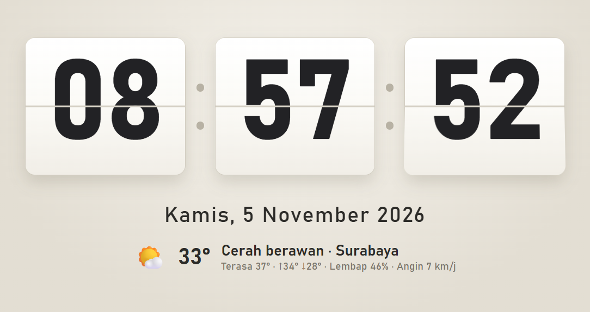
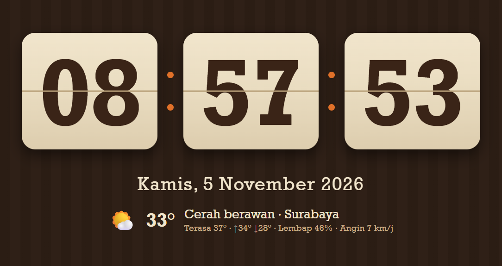
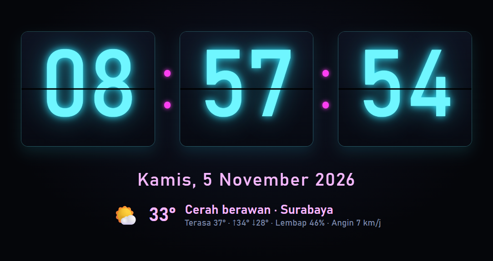
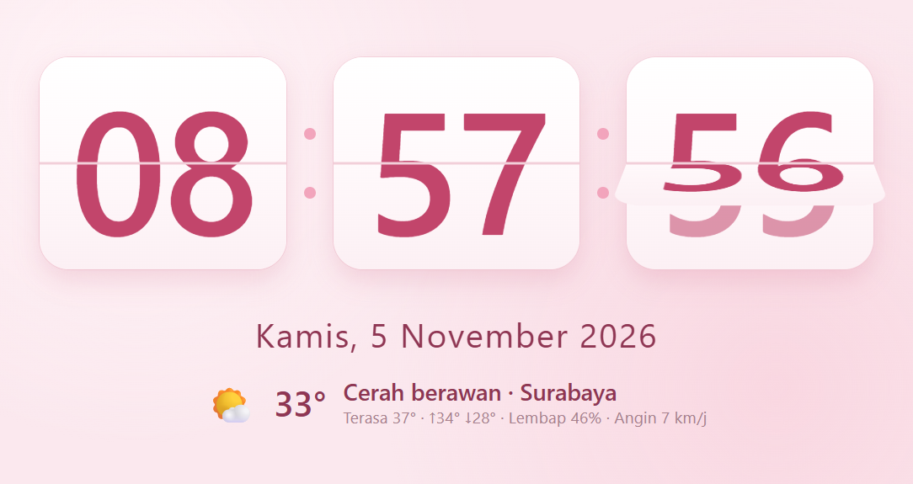
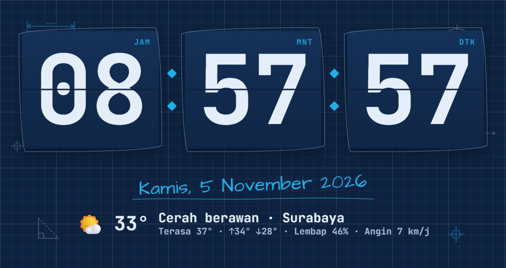
Pakai gratis tanpa batas waktu. Aktifkan Pro lewat QRIS, berapa pun nominalnya.
Untuk jam meja sehari-hari
Untuk masjid, toko, kantor, dan pencinta detail
Di aplikasi: Pengaturan → Lisensi → Dukung developer. Bayar lewat QRIS, kode Pro langsung dikirim.
Pasang dalam satu menit. Gratis, ringan, dan berbahasa Indonesia.
Windows 10/11 64-bit · Android 7+ · Semua versi